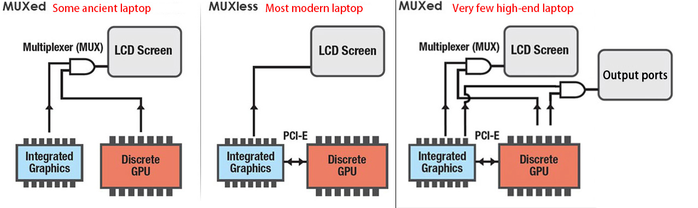

双显卡笔记本独显直通
目录
介绍
双显卡笔记本中直通独显（dGPU）到 win10 虚拟机。
环境：
- 联想 Legion R7000P 2020 笔记本
- RTX2060 笔记本显卡
- libvirt+qemu
- Host: Gentoo Linux
- Guest: Windows 10 LTSC 2019
MUXed
MUXed 结构的笔记本才容易实现独立显卡直通，Legion R7000P 应该就是 MUXed 的。关于什么是 MUXed 的，可以看下图的解释。

关于如何检测笔记本是否是 MUXed 的，目前没有什么好的办法。有一种说法是运行 lspci，查找有关 Intel HD Graphics/AMD GPU 和 NVIDIA 的设备：
- 如果独显设备名以 3D Controller 开头，那你的电脑就是第二种 MUXless（核显直连显示器）。
- 如果独显设备名以 VGA Controller 开头，并且有一个 HD Graphics/AMD GPU 核显，那你的电脑是第三种 MUXed（核显、独显切换）。
启用 IOMMU 和 vfio 模块
IOMMU
- intel CPU：添加内核参数
intel_iommu=on iommu=pt，BIOS 开启 VT-d - amd CPU：添加内核参数
iommu=pt，BIOS 开启 AMD-Vi
vfio
添加模块 vfio_pci vfio vfio_iommu_type1 vfio_virqfd 到 initramfs 中。如果是像我一样使用 dracut 生成 initramfs，则在 /etc/dracut.conf 中添加配置 add_drivers+=" vfio_pci vfio vfio_iommu_type1 vfio_virqfd " ，之后重新生成 initramfs。
隔离 GPU
#!/bin/bash shopt -s nullglob for g in `find /sys/kernel/iommu_groups/* -maxdepth 0 -type d | sort -V`; do echo "IOMMU Group ${g##*/}:" for d in $g/devices/*; do echo -e "\t$(lspci -nns ${d##*/})" done; done;
运行上述脚本，查看显卡所在的 IOMMU Group，并得到显卡相关设备的 device id。
IOMMU Group 10:
01:00.0 VGA compatible controller [0300]: NVIDIA Corporation TU106M [GeForce RTX 2060 Mobile] [10de:1f15] (rev a1)
01:00.1 Audio device [0403]: NVIDIA Corporation TU106 High Definition Audio Controller [10de:10f9] (rev a1)
01:00.2 USB controller [0c03]: NVIDIA Corporation TU106 USB 3.1 Host Controller [10de:1ada] (rev a1)
01:00.3 Serial bus controller [0c80]: NVIDIA Corporation TU106 USB Type-C UCSI Controller [10de:1adb] (rev a1)
如上所见，device id 分别为 10de:1f15 、 10de:10f9 、 10de:1ada 、 10de:1adb 。再将以上 deivce id 作为参数添加到内核参数或 /etc/modprobe.d/vfio.conf 中。
- 内核参数：vfio-pci.ids=10de:1f15,10de:10f9,10de:1ada,10de:1adb
/etc/modprobe.d/vfio.conf：options vfio-pci ids=10de:1f15,10de:10f9,10de:1ada,10de:1adb
dracut 必须将 device id 添加到内核参数中，并且添加参数 rd.driver.pre=vfio_pci 。
最后重启电脑。开机后通过命令 lspci -k 确认上述 device id 对应的设备在使用 vfio-pci 驱动。如果有各别设备没有使用 vfio-pci 驱动，则可以通过手动 unbind 和 bind 驱动的方式加载 vfio-pci 驱动。比如如果 0000:01:00.2 仍在使用 xhci_hcd 驱动，则：
# run as root echo -n "0000:01:00.2" > /sys/bus/pci/drivers/xhci_hcd/unbind echo -n "0000:01:00.2" > /sys/bus/pci/drivers/vfio-pci/bind
创建虚拟机
首先使用 libvirt 创建一个非显卡直通的虚拟机，如果你有多余的显示器和键鼠，也可以直接创建显卡直通的虚拟机。这里我们假设没有多余的设备，并且之后使用 RDP 连接虚拟机。
首先下载windows 10 LTSC 2019和 virtio windows驱动镜像。
创建虚拟机：
Overview：Firmware 选择 UEFI x86_64:/usr/share/edk2-ovmf/OVMF_CODE.fdCPUs：选择 Topology，Manually set CPU topology，Sockets 设为 1，Cores 按需要来，我设为 4，Threads 设置为 2。这样一共就分配了 4 核 8 线程的 CPUMemory：内存我设置为 32GSATA Disk：Disk Bus 选择 Virtio，可以最小化磁盘性能损耗NIC：Device model 也选择 virtio- 之后再添加一个
Stroage，选择 Select custom storage 并选中之前下载的 virtio windows 驱动镜像，然后 Device type 选择 CDROM device - 最后在
Boot Options中选中需要启动的设备
开始安装，在 windows 安装进行到选择硬盘的时候，通过之前加载的 virtio win 驱动的 CDROM，安装 virtio 的磁盘和网络驱动。具体参考可见视频 https://www.bilibili.com/video/BV1dQ4y1o78R 的 29 分 35 秒。安装完毕进入 windows，开启远程桌面并记下 IP，之后通过 RDP 连接虚拟机。
配置和优化 RemoteFX
配置 RemoteFX
- 通过
Win+R运行gpedit.msc - 定位到
计算机配置->管理模板->Windows组件->远程桌面服务->远程桌面会话主机->远程会话环境- 开启
对 RemoteApp 使用高级 RemoteFX 图形 - （可选）开启
配置 RemoteFX 自适应图形的图像质量，设置为高 - 开启
为专门针对 Windows Server 2008 R2 SP1 设计的 RemoteFX 客户端启动 RemoteFX 编码 - 开启
配置 RemoteFX 数据的压缩，并设置为不需使用 RDP 压缩算法- 连接压缩会导致编码和解码时产生额外的延迟
- 开启
- 定位到
计算机配置->管理模板->Windows组件->远程桌面服务->远程桌面会话主机->远程会话环境->RemoteFX for Windows Server 2008 R2- 开启
配置RemoteFX - （可选）开启
使用RemoteFX时优化视觉体验，并都设置为最高
- 开启
解除 30-ish fps 限制
- 启动注册表编辑器
- 定位并单击以下注册表子键：
HKEY_LOCAL_MACHINE\SYSTEM\CurrentControlSet\Control\Terminal Server\WinStations - 在
编辑菜单中选择新建，然后再选择DWORD（32位）值 - 输入
DWMFRAMEINTERVAL并回车 - 右键
DWMFRAMEINTERVAL，选择修改 - 选择十进制，并输入 15。该设置将最大帧率设置为每秒 60 帧 (FPS)。
显卡直通
先关闭虚拟机。首先我们需要确认 host 和 guest 中的 GPU 硬件 ID 一致的，然而 Legion R7000P 中两者不一致，准确的来说是其中的 Sub ID 部分不一致，所以需要手动修改一下。首先通过命令 lspci -nnk | egrep -A3 "VGA|3D" 查看显卡的 Vendor ID 和 Device ID。
➜ lspci -nnk | egrep -A3 "VGA|3D"
01:00.0 VGA compatible controller [0300]: NVIDIA Corporation TU106M [GeForce RTX 2060 Mobile] [10de:1f15] (rev a1)
Subsystem: Lenovo TU106M [GeForce RTX 2060 Mobile] [17aa:3a43]
Kernel driver in use: vfio-pci
Kernel modules: nouveau
--
06:00.0 VGA compatible controller [0300]: Advanced Micro Devices, Inc. [AMD/ATI] Renoir [1002:1636] (rev c6)
Subsystem: Lenovo Renoir [17aa:3a47]
Kernel driver in use: amdgpu
Kernel modules: amdgpu
其中 NVIDIA 独显的 Vendor ID 为 10de，Device ID 为 1f15。再用命令 grep "PCI_SUBSYS_ID=" /sys/bus/pci/devices/0000:01:00.0/uevent 查看 Sub Vendor ID 和 Sub Device ID。
➜ grep "PCI_SUBSYS_ID=" /sys/bus/pci/devices/0000:01:00.0/uevent PCI_SUBSYS_ID=17AA:3A47
其中 Sub Vendor ID 为 17AA，Sub Device ID 为 3A47。将 17AA 和 3A47 转换为十进制 6058 和 14919，并在虚拟机的 XML 中添加配置：
<domain xmlns:qemu="http://libvirt.org/schemas/domain/qemu/1.0" type="kvm"> ... <qemu:commandline> <qemu:arg value='-set'/> <qemu:arg value='device.hostdev0.x-pci-sub-vendor-id=6058'/> <qemu:arg value='-set'/> <qemu:arg value='device.hostdev0.x-pci-sub-device-id=14919'/> </qemu:commandline> </domain>
注意 XML 的第一行一定要添加 xmlns:qemu="http://libvirt.org/schemas/domain/qemu/1.0" ，否则后面的配置无法成功添加。
在 libvirt 中添加硬件，选择 PCI Host Device，然后将 0000:01:00.0 NVIDIA Corporation GeForce RTX 2060 Mobile 和 0000:01:00.1 NVIDIA Corporation High Definition Audio Controller 等都添加进去。
最后再在 libvirt 中删除虚拟机的 Display Spice 和 Video QXL ，在 CPUs 中取消 Copy host CPU configuration 并将 Model 选择为 host passthrough。如果你需要直通鼠标和键盘，也可以在这个时候添加。
创建网桥
有线网卡的网桥创建起来较为简单，这里就不详细介绍了，有需要的可以查看我上一篇软路由虚拟机的 BLOG。因为是笔记本，所以这里主要介绍无线网卡的桥接方法。
先开启 proxy_arp 和 ip_forward，修改配置文件 /etc/sysctl.conf ，添加下述配置：
net.ipv4.ip_forward = 1 net.ipv4.conf.all.proxy_arp = 1
再点击 libvirt 菜单栏上的 Edit -> Connection Details ，假设 host 的 ip 为 192.168.3.12，无线网卡为 wlp4s0，新建一个 Network， Name 设置为 proxyArp， Mode 选择 Routed， Forward to 选择 Physical device， Device 设置为 wlp4s0， IPv4 的 Network 设置为 192.168.3.100/28，完成创建。
然后修改 win10 虚拟机的 NIC 配置，将 Network source 改为 Virtual network 'proxyArp': Route to wlp4s0，最后重新启动虚拟机与物理机。
远程连接
重新启动虚拟机后，使用 RDP 连接到虚拟机中。到 nvidia 官网下载驱动，并进行安装。如果安装过程中并未出现问题，则至此显卡直通配置完成。另外如果不外接显示器的话，windows 的分辨率似乎会被限制在 640x480，不知道会不会对游戏有影响，所以有条件还是买一个 HDMI 欺骗器接到独显连接的显示接口上。
远程连接方式一共有三种，分别可以适用于不同的情况。
RDP
简单使用方法：
- 确保使用 FreeRDP 2.0
- 获取 windows 虚拟机 IP，比如 192.168.3.108
- xfreerdp /v:192.168.3.108:3389 /w:1600 /h:900 /bpp:32 +clipboard +fonts /gdi:hw /rfx /rfx-mode:video /sound:sys:pulse +menu-anims +window-drag
对于使用 xfreedp 的 RemoteFX 连接的一些问题：
- 只有窗口化的游戏可以运行，全屏将会触发 d3d11 0x087A0001 不能设置分辨率等问题。媒体播放器不受其影响。
- 作为解决方案，使用无边框模式游戏，或其他等效方案
- windows 客户端似乎没有该问题
- 由于 RDSH/RDVH 连接不支持“相对”鼠标，鼠标会乱跑
- 重定向 XBOX 手柄或 USB 摇杆可能会解决这个问题？
- 使用 Synergy (v1) 并启用相对鼠标模式
- 通过 RDP RemoteFX 运行 3D 游戏鼠标不稳定
Looking glass
Looking glass 的优点是低延迟，其并不是通过网络与虚拟机通信，而是直接使用一块共享内存。缺点是只能本地连接，而且似乎需要外接一个显示设备（或 HDMI 欺骗器）才能让键盘、鼠标正常工作，并且似乎不能使用 spice 套娃远程操作 looking glass。
安装 client
首先在 host 系统上安装 looking glass client，在 gentoo 上可以通过如下步骤直接安装我打包的 looking glass。
sudo eselect repository enable gig sudo emerge --sync gig sudo emerge -avt looking-glass
计算内存大小
通过以下公式，根据你期望的最大分辨率来计算内存大小。
width x height x 4 x 2 = total bytes total bytes / 1024 / 1024 = total megabytes + 10
比如，我想要最大使用 4K 分辨率（3840x2160）：
3840 x 2160 x 4 x 2 = 66355200 bytes 66355200 / 1024 / 1024 = 63.28 MB + 10 = 73.28
最后要注意内存的大小要上向取整到最接近的 2 的幂，在上面的例子中则应为 128。
配置 libvirt
... <devices> ... <shmem name='looking-glass'> <model type='ivshmem-plain'/> <size unit='M'>128</size> </shmem> </devices> ...
将以上内容添加到虚拟机的 XML 配置中，其中 128 即为上面计算出来的大小。
如果想要通过 spice 实现键盘和鼠标输入与剪贴板共享，则必须添加 spice 设备。
- 在 libvirt 中，选择
Add Hardware，然后再选择Graphics，使用默认的 spice 配置即可，最后完成添加 - 选择
Video设备，然后在Model栏中输入 none，注意必须要完成这一步，否则可能会造成虚拟机不使用直通的显卡渲染 - 如果有
tablet设备，则删除 - 如果没有
Mouse设备，则添加一个 - 如果没有
Keyboard设备，则添加一个- 这里使用 Virtio 的键盘可以更好的提高性能，然而 PS/2 的键盘没办法删掉，不知道被哪个设备依赖了，所以就使用 PS/2 的键盘了
- 还有如果使用 Virtio 的键盘，则需要通过上面加载的 virtio windows 驱动 的 CDROM，以安装驱动
创建共享内存文件
新建文件 /etc/tmpfiles.d/10-looking-glass.conf ，其内容为：
#Type Path Mode UID GID Age Argument f /dev/shm/looking-glass 0660 user kvm -
将其中的 user，改为你自己的用户名。最后使用命令 systemd-tmpfiles --create /etc/tmpfiles.d/10-looking-glass.conf 创建共享内存文件，无需等待下次重启。
安装 host
首先需要在 windows 中安装 IVSHMEM 驱动，windows 不会自己安装 IVSHMEM 设备，相反它只会为该设备安装一个假驱动。先下载需要安装的驱动程序，https://fedorapeople.org/groups/virt/virtio-win/direct-downloads/upstream-virtio/ ，注意必须下载 0.1.161 或更高的版本，最后将其解压。
安装 IVSHMEM 驱动需要打开 设备管理器 ，然后在 系统设备 下，找到 PCI标准内存控制器 ，然后选择 更新驱动程序 ，再选择手动更新，选择我们之前下载并解压好的驱动目录，然后安装驱动即可。
host 需要在 windows 虚拟机中安装，先下载与 client 版本对应的 host 安装文件：https://looking-glass.io/downloads 。下载完成后解压、安装即可，完成后重启虚拟机，然后通过 log 文件查看其是否正常启动，log 在开始菜单里就有。
最后再安装一下 spice guest tools， https://www.spice-space.org/download.html#windows-binaries ，以更好的支持鼠标与剪贴板共享。
配置 client
我使用的配置如下，将配置文件放在 ~/.looking-glass-client.ini 或 /etc/looking-glass-client.ini ：
[app] renderer=egl shmFile=/dev/shm/looking-glass [win] borderless=yes fullScreen=yes size=1920x1080 [input] grabKeyboard=yes escapeKey=97 [spice] captureOnStart=yes
由于我的笔记本没有 ScrLk 按键，所以将 escape 键设置为了 右 Ctrl 按键。
至此 looking glass 配置完成，运行命令 looking-glass-client 连接到虚拟机。
配置 Scream
由于 looking glass 不支持传递音频，所以我们还需要使用 Scream 将 VM 的音频传递给 host。
首先，编辑 windows 虚拟机的 XML，添加以下部分：
... <devices> ... <shmem name='scream-ivshmem'> <model type='ivshmem-plain'/> <size unit='M'>2</size> </shmem> </devices> ...
然后再如 looking glass 一样，添加配置文件 /etc/tmpfiles.d/11-scream-ivshmem.conf ，并运行命令 systemd-tmpfiles --create /etc/tmpfiles.d/11-scream-ivshmem.conf 。
f /dev/shm/scream-ivshmem 0660 user kvm -
如果没有安装 IVSHMEM 驱动，则需要安装一下，跟上面一样。然后下载 scream 的 windows 驱动，地址： https://github.com/duncanthrax/scream/releases ，解压并进行安装。
再以管理员权限在 CMD 中运行 REG ADD HKLM\SYSTEM\CurrentControlSet\Services\Scream\Options /v UseIVSHMEM /t REG_DWORD /d 2 。
在 Linux 物理机中安装 scream，然后创建配置文件 ~/.config/systemd/user/scream-ivshmem-pulse.service ：
[Unit] Description=Scream IVSHMEM pulse receiver After=pulseaudio.service Wants=pulseaudio.service [Service] Type=simple ExecStartPre=/usr/bin/truncate -s 0 /dev/shm/scream-ivshmem ExecStartPre=/bin/dd if=/dev/zero of=/dev/shm/scream-ivshmem bs=1M count=2 ExecStart=/usr/bin/scream -m /dev/shm/scream-ivshmem [Install] WantedBy=default.target
最后运行以下命令即可：
systemctl start --user scream-ivshmem-pulse systemctl enable --user scream-ivshmem-pulse
这样就配置完成了，在 looing glass 里就可以听到声音了。
steam 远程畅玩（流式传输）
因为 RDP 的限制，像 steam 家庭串流或 Geforce Experience 的方式对游戏来说更为推荐。
如果不想每次串流游戏都输入密码解锁屏幕，则可以通过 RDP 以管理员权限运行 cmd，然后运行以下命令，也可以将其保存为脚本，方便以后使用。注意运行完该命令会立马断开 RDP。
@powershell -NoProfile -ExecutionPolicy unrestricted -Command "$sessionid=((quser $env:USERNAME | select -Skip 1) -split '\s+')[2]; tscon $sessionid /dest:console" 2> UnlockErrors.log
benchmark
简单运行了一下 3dmark 的 Time Spy，做虚拟机的图形性能测试。测试了以下几种情况：
- win10 + 物理机直接运行，3dmark 得分 6900
- win10 + 虚拟机显卡直通 + 外接显示器，3dmark 得分 6000
- win10 + 虚拟机显卡直通 + steam 串流，3dmark 得分 5600
- win10 + 虚拟机显卡直通 + looking glass，3dmark 得分 5000，并且在加载的时候，画面延迟近 10 秒
由此可见，想要玩游戏，还是最好外接显示器，或者起码使用 steam 串流吧，个人感觉 looking glass 的性能甚至可能没有 RDP 高，但 RDP 无法运行 3dmark，所以无法比较测试。另外这几种情况中，CPU 得分的差距更大，但一般游戏也不会占用过多 CPU 资源，所以这里并没有记录。
PS：win10 + 虚拟机显卡直通 + looking glass + HDMI 欺骗器，3dmark 得分也是 5600，looking glass 的性能有待进一步测试。
参考连接
- PCI passthrough via OVMF https://wiki.archlinux.org/title/PCI_passthrough_via_OVMF
- [GUIDE] Optimus laptop dGPU passthrough https://gist.github.com/Misairu-G/616f7b2756c488148b7309addc940b28
- Vendor ID & Device ID https://github.com/marcosscriven/ovmf-with-vbios-patch/issues/2
- 笔记本 Optimus MUXless 下的 Intel 和 NVIDIA 虚拟机显卡直通 https://lantian.pub/article/modify-computer/laptop-intel-nvidia-optimus-passthrough.lantian/
- ledis 的单显卡直通教程 https://github.com/ledisthebest/LEDs-single-gpu-passthrough/blob/main/README-cn.md
- Looking glass Installation https://looking-glass.io/docs/676/install
- Bridging Network Connections with Proxy ARP https://wiki.debian.org/BridgeNetworkConnectionsProxyArp
- setup kvm on a wireless interface on a laptop machine https://unix.stackexchange.com/questions/159191/setup-kvm-on-a-wireless-interface-on-a-laptop-machine
- 桥接无线网卡 https://blog.lilydjwg.me/2020/5/19/bridged-wireless-network.215330.html
附录：XML 配置
最后附上我的虚拟机的 XML 配置。
<domain type='kvm' id='1' xmlns:qemu='http://libvirt.org/schemas/domain/qemu/1.0'> <name>win10</name> <uuid>d5da831a-c1eb-4668-a864-0731557d80a0</uuid> <metadata> <libosinfo:libosinfo xmlns:libosinfo="http://libosinfo.org/xmlns/libvirt/domain/1.0"> <libosinfo:os id="http://microsoft.com/win/10"/> </libosinfo:libosinfo> </metadata> <memory unit='KiB'>33554432</memory> <currentMemory unit='KiB'>33554432</currentMemory> <vcpu placement='static'>8</vcpu> <resource> <partition>/machine</partition> </resource> <os> <type arch='x86_64' machine='pc-q35-6.0'>hvm</type> <loader readonly='yes' type='pflash'>/usr/share/edk2-ovmf/OVMF_CODE.fd</loader> <nvram>/var/lib/libvirt/qemu/nvram/win10_VARS.fd</nvram> <bootmenu enable='no'/> </os> <features> <acpi/> <apic/> <hyperv> <relaxed state='on'/> <vapic state='on'/> <spinlocks state='on' retries='8191'/> </hyperv> <vmport state='off'/> </features> <cpu mode='host-passthrough' check='partial' migratable='on'> <topology sockets='1' dies='1' cores='4' threads='2'/> </cpu> <clock offset='localtime'> <timer name='rtc' tickpolicy='catchup'/> <timer name='pit' tickpolicy='delay'/> <timer name='hpet' present='no'/> <timer name='hypervclock' present='yes'/> </clock> <on_poweroff>destroy</on_poweroff> <on_reboot>restart</on_reboot> <on_crash>destroy</on_crash> <pm> <suspend-to-mem enabled='no'/> <suspend-to-disk enabled='no'/> </pm> <devices> <emulator>/usr/bin/qemu-system-x86_64</emulator> <disk type='file' device='disk'> <driver name='qemu' type='qcow2'/> <source file='/var/lib/libvirt/images/win10.qcow2' index='3'/> <backingStore/> <target dev='vda' bus='virtio'/> <boot order='1'/> <alias name='virtio-disk0'/> <address type='pci' domain='0x0000' bus='0x04' slot='0x00' function='0x0'/> </disk> <disk type='file' device='cdrom'> <driver name='qemu' type='raw'/> <source file='/home/petrus/Downloads/iso/cn_windows_10_enterprise_ltsc_2019_x64_dvd_9c09ff24.iso' index='2'/> <backingStore/> <target dev='sdb' bus='sata'/> <readonly/> <boot order='2'/> <alias name='sata0-0-1'/> <address type='drive' controller='0' bus='0' target='0' unit='1'/> </disk> <disk type='file' device='cdrom'> <driver name='qemu' type='raw'/> <source file='/home/petrus/Downloads/iso/virtio-win-0.1.185.iso' index='1'/> <backingStore/> <target dev='sdc' bus='sata'/> <readonly/> <alias name='sata0-0-2'/> <address type='drive' controller='0' bus='0' target='0' unit='2'/> </disk> <controller type='usb' index='0' model='qemu-xhci' ports='15'> <alias name='usb'/> <address type='pci' domain='0x0000' bus='0x02' slot='0x00' function='0x0'/> </controller> <controller type='sata' index='0'> <alias name='ide'/> <address type='pci' domain='0x0000' bus='0x00' slot='0x1f' function='0x2'/> </controller> <controller type='pci' index='0' model='pcie-root'> <alias name='pcie.0'/> </controller> <controller type='pci' index='1' model='pcie-root-port'> <model name='pcie-root-port'/> <target chassis='1' port='0x10'/> <alias name='pci.1'/> <address type='pci' domain='0x0000' bus='0x00' slot='0x02' function='0x0' multifunction='on'/> </controller> <controller type='pci' index='2' model='pcie-root-port'> <model name='pcie-root-port'/> <target chassis='2' port='0x11'/> <alias name='pci.2'/> <address type='pci' domain='0x0000' bus='0x00' slot='0x02' function='0x1'/> </controller> <controller type='pci' index='3' model='pcie-root-port'> <model name='pcie-root-port'/> <target chassis='3' port='0x12'/> <alias name='pci.3'/> <address type='pci' domain='0x0000' bus='0x00' slot='0x02' function='0x2'/> </controller> <controller type='pci' index='4' model='pcie-root-port'> <model name='pcie-root-port'/> <target chassis='4' port='0x13'/> <alias name='pci.4'/> <address type='pci' domain='0x0000' bus='0x00' slot='0x02' function='0x3'/> </controller> <controller type='pci' index='5' model='pcie-root-port'> <model name='pcie-root-port'/> <target chassis='5' port='0x14'/> <alias name='pci.5'/> <address type='pci' domain='0x0000' bus='0x00' slot='0x02' function='0x4'/> </controller> <controller type='pci' index='6' model='pcie-root-port'> <model name='pcie-root-port'/> <target chassis='6' port='0x15'/> <alias name='pci.6'/> <address type='pci' domain='0x0000' bus='0x00' slot='0x02' function='0x5'/> </controller> <controller type='pci' index='7' model='pcie-root-port'> <model name='pcie-root-port'/> <target chassis='7' port='0x8'/> <alias name='pci.7'/> <address type='pci' domain='0x0000' bus='0x00' slot='0x01' function='0x0' multifunction='on'/> </controller> <controller type='pci' index='8' model='pcie-root-port'> <model name='pcie-root-port'/> <target chassis='8' port='0x9'/> <alias name='pci.8'/> <address type='pci' domain='0x0000' bus='0x00' slot='0x01' function='0x1'/> </controller> <controller type='pci' index='9' model='pcie-root-port'> <model name='pcie-root-port'/> <target chassis='9' port='0xa'/> <alias name='pci.9'/> <address type='pci' domain='0x0000' bus='0x00' slot='0x01' function='0x2'/> </controller> <controller type='pci' index='10' model='pcie-root-port'> <model name='pcie-root-port'/> <target chassis='10' port='0xb'/> <alias name='pci.10'/> <address type='pci' domain='0x0000' bus='0x00' slot='0x01' function='0x3'/> </controller> <controller type='pci' index='11' model='pcie-to-pci-bridge'> <model name='pcie-pci-bridge'/> <alias name='pci.11'/> <address type='pci' domain='0x0000' bus='0x0a' slot='0x00' function='0x0'/> </controller> <controller type='pci' index='12' model='pcie-root-port'> <model name='pcie-root-port'/> <target chassis='12' port='0xc'/> <alias name='pci.12'/> <address type='pci' domain='0x0000' bus='0x00' slot='0x01' function='0x4'/> </controller> <controller type='virtio-serial' index='0'> <alias name='virtio-serial0'/> <address type='pci' domain='0x0000' bus='0x03' slot='0x00' function='0x0'/> </controller> <interface type='network'> <mac address='52:54:00:9c:b1:61'/> <source network='proxyArp' portid='dea4d995-d8d9-408d-ac30-ac45bfd5627e' bridge='virbr1'/> <target dev='vnet0'/> <model type='virtio'/> <alias name='net0'/> <address type='pci' domain='0x0000' bus='0x01' slot='0x00' function='0x0'/> </interface> <serial type='pty'> <source path='/dev/pts/0'/> <target type='isa-serial' port='0'> <model name='isa-serial'/> </target> <alias name='serial0'/> </serial> <console type='pty' tty='/dev/pts/0'> <source path='/dev/pts/0'/> <target type='serial' port='0'/> <alias name='serial0'/> </console> <channel type='spicevmc'> <target type='virtio' name='com.redhat.spice.0' state='connected'/> <alias name='channel0'/> <address type='virtio-serial' controller='0' bus='0' port='1'/> </channel> <input type='mouse' bus='ps2'> <alias name='input0'/> </input> <input type='keyboard' bus='ps2'> <alias name='input1'/> </input> <graphics type='spice' port='5900' autoport='yes' listen='127.0.0.1'> <listen type='address' address='127.0.0.1'/> <image compression='off'/> <gl enable='no'/> </graphics> <sound model='ich9'> <alias name='sound0'/> <address type='pci' domain='0x0000' bus='0x00' slot='0x1b' function='0x0'/> </sound> <audio id='1' type='spice'/> <video> <model type='none'/> <alias name='video0'/> </video> <hostdev mode='subsystem' type='pci' managed='yes'> <driver name='vfio'/> <source> <address domain='0x0000' bus='0x01' slot='0x00' function='0x0'/> </source> <alias name='hostdev0'/> <address type='pci' domain='0x0000' bus='0x06' slot='0x00' function='0x0'/> </hostdev> <hostdev mode='subsystem' type='pci' managed='yes'> <driver name='vfio'/> <source> <address domain='0x0000' bus='0x01' slot='0x00' function='0x1'/> </source> <alias name='hostdev1'/> <address type='pci' domain='0x0000' bus='0x07' slot='0x00' function='0x0'/> </hostdev> <hostdev mode='subsystem' type='pci' managed='yes'> <driver name='vfio'/> <source> <address domain='0x0000' bus='0x01' slot='0x00' function='0x2'/> </source> <alias name='hostdev2'/> <address type='pci' domain='0x0000' bus='0x08' slot='0x00' function='0x0'/> </hostdev> <hostdev mode='subsystem' type='pci' managed='yes'> <driver name='vfio'/> <source> <address domain='0x0000' bus='0x01' slot='0x00' function='0x3'/> </source> <alias name='hostdev3'/> <address type='pci' domain='0x0000' bus='0x09' slot='0x00' function='0x0'/> </hostdev> <redirdev bus='usb' type='spicevmc'> <alias name='redir0'/> <address type='usb' bus='0' port='2'/> </redirdev> <redirdev bus='usb' type='spicevmc'> <alias name='redir1'/> <address type='usb' bus='0' port='3'/> </redirdev> <memballoon model='virtio'> <alias name='balloon0'/> <address type='pci' domain='0x0000' bus='0x05' slot='0x00' function='0x0'/> </memballoon> <shmem name='looking-glass'> <model type='ivshmem-plain'/> <size unit='M'>128</size> <alias name='shmem0'/> <address type='pci' domain='0x0000' bus='0x0b' slot='0x01' function='0x0'/> </shmem> <shmem name='scream-ivshmem'> <model type='ivshmem-plain'/> <size unit='M'>2</size> <alias name='shmem1'/> <address type='pci' domain='0x0000' bus='0x0b' slot='0x02' function='0x0'/> </shmem> </devices> <seclabel type='dynamic' model='dac' relabel='yes'> <label>+77:+77</label> <imagelabel>+77:+77</imagelabel> </seclabel> <qemu:commandline> <qemu:arg value='-set'/> <qemu:arg value='device.hostdev0.x-pci-sub-vendor-id=6058'/> <qemu:arg value='-set'/> <qemu:arg value='device.hostdev0.x-pci-sub-device-id=14919'/> </qemu:commandline> </domain>